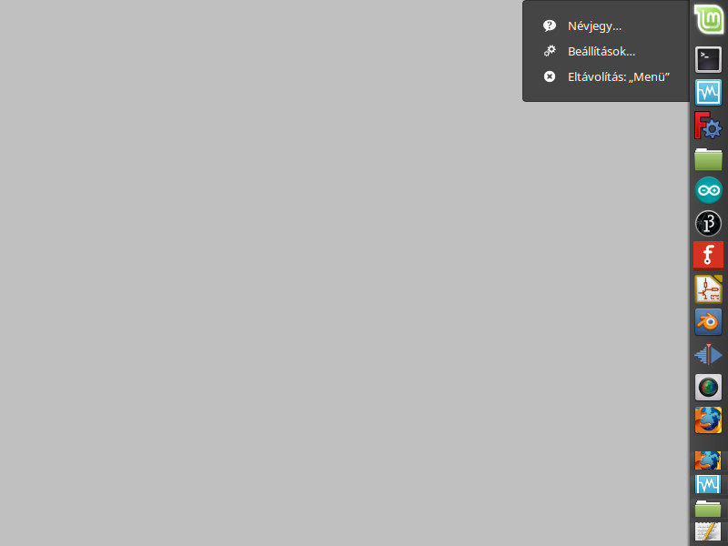
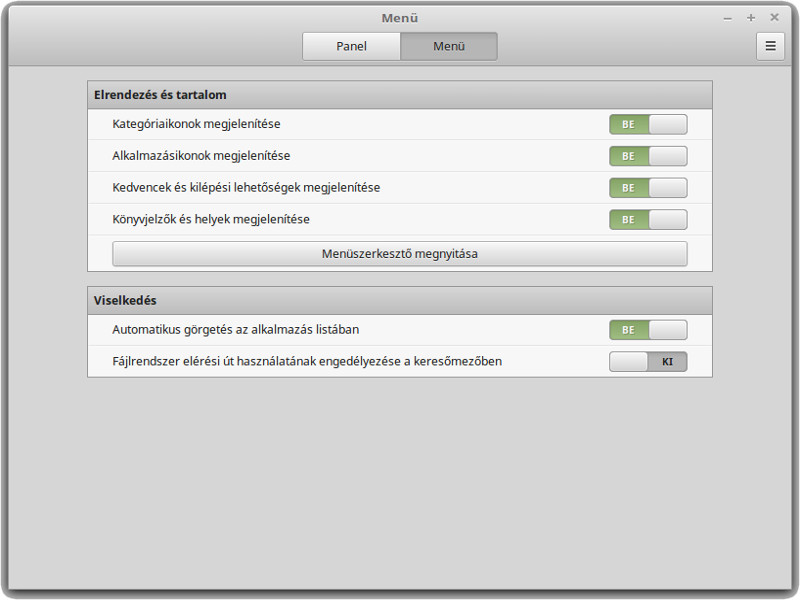
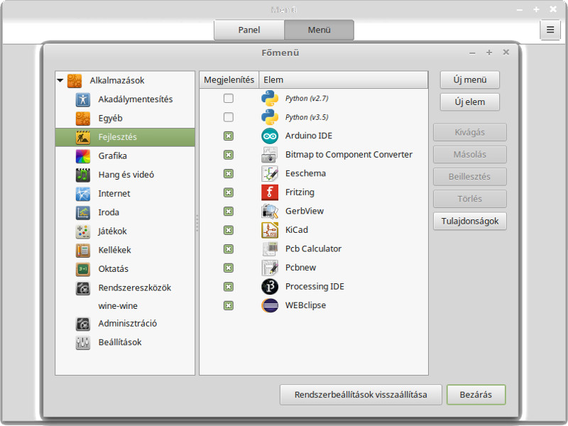
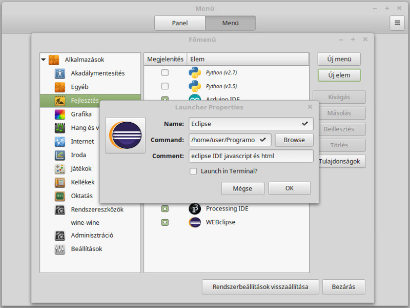

A JavaScript és Web Fejlesztők részére készített Eclipse IDE számára készítünk parancsikont.
A következőkben a Linux Startmenüjében a Fejlesztésekhez adjuk az Eclipse programot.
Jobb klikk a Linux Mint Startgomb*ra, majd kiválasztjuk a Beállítások... menüpontot.
A megjelenő Menü ablakban a Panel/Menü füleken átváltunk a oldalra.
Az elrendezés és tartalom nevű keretben rákattintunk a gombra.
(*Startgomb : :))


Megjelenik a Főmenü ablak. A bal oldali oszlopban kijelöljük a Fejlesztés kategóriát. Az gomb indítja az új alkalmazás felvételét a menübe. A Launcher Properties ablakban megadjuk az új alkalmazás nevét Name mezőben, a Command mezőben megadjuk az indító fájl elérhetőségét, amit a gomb megnyomásával a Fájlkezelőben is kijelölhetünk. Az eclipse mappánkban található eclipse nevű fájlt kell kiválasztanunk.


Amennyiben magyarázó szöveget szeretnénk rögzíteni, azt a Comment mezőben tehetjük meg. Ez nem kötelező.
Az ikonra kattintva pedig a Fájlkezelővel kereshetünk megfelelő képet programunk parancsikonjához.
Befejezésül az gombbal hozzáadjuk a Startmenühöz az elkészült parancsikont.